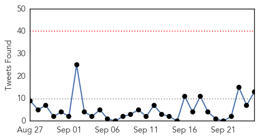
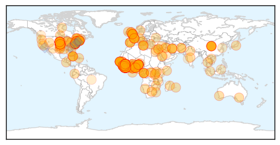

West Nile Virus
30-Day Web Trend
30-Day Twitter Trend
0 alerts, 0 warnings

Article Locations


Article Confidences

Top Articles:
-
No articles found for Sep 25, 2014
Top Tweets:
-
No tweets found for Sep 25, 2014
Ebola
30-Day Web Trend
30-Day Twitter Trend
0 alerts, 0 warnings

Article Locations

Article Confidences

Top Articles:
- 1.000
- Flights posing Ebola risk to U.S. continue
- 1.000
- Obama urges U.N. to ramp up fight against Ebola epidemic
- 1.000
- Terrifying new normal? An Ebola outbreak that never really goes away.
- 1.000
- Liberia May Fall Into Recession Due To Ebola Epidemic
- 1.000
- Millions quarantined in Sierra Leone as struggle to halt Ebola spread continues
- 1.000
- Ebola crisis – the story in brief
- 1.000
- The U.S. Is Trying to Stop an Ebola Pandemic
- 1.000
- HCA gives $1M to Ebola response efforts
- 1.000
- World must do more to battle Ebola - Obama
- 1.000
- Red Cross team attacked in Guinea Republican American
- 1.000
- Sierra Leone quarantines 2 million to fight Ebola
- 1.000
- Ebola outbreak: One-third of Sierra Leone quarantined (w/video)
- 1.000
- Ebola mission is uncharted territory, MUSC experts say
- 1.000
- U.S. warns that Ebola could infect 1.4 million
- 1.000
- 3rd U.S. Aid Worker Infected With Ebola Released From Hospital
- 1.000
- Red Cross Group Collecting Ebola Bodies Targeted
- 1.000
- Ebola Crisis in West Africa:Ebola May Collapse Nations in West Africa as Death Toll Passes 3,000
- 1.000
- Ebola victims in African village 'rise from the dead' causing panic and fear among locals
- 1.000
- Nigeria in first step towards all-clear on Ebola
- 1.000
- Sierra Leone cordons off three areas to control Ebola
- 1.000
- Nigeria is 'Ebola-Free' President Goodluck Jonathan Tells UN
- 1.000
- How Senegal Has Dodged the Outbreak
- 1.000
- American Ebola patient discharged from hospital
- 1.000
- Sierra Leone Isolates 3 More Areas in Response to Ebola
- 1.000
- A third of Sierra Leone under quarantine for Ebola
- 1.000
- Ebola epidemic a growing threat to regional and global security
- 1.000
- Worst Ebola outbreak shows no signs of relenting
- 1.000
- Ebola locks down third of Sierra Leone in quarantine as global death toll hits 3,000
- 1.000
- Ebola Outbreak 2014 Latest News: Could Lead to Chaos, Collapse of Nations – Experts
- 1.000
- This Ebola outbreak could be here to stay
- 1.000
- Scary Ebola Facts and Numbers
- 1.000
- 12 Alarming Numbers Show The Enormity Of The Ebola Crisis
- 1.000
- Sierra Leone widens Ebola quarantine to three more districts
- 1.000
- Sierra Leone widens Ebola quarantine to three more districts
- 1.000
- Red Cross team attacked while burying Ebola dead
- 1.000
- World must do more to battle Ebola in West Africa: Obama
- 1.000
- How Ebola started, spread and spiralled out of control
- 1.000
- World must do more to battle Ebola in West Africa – Obama
- 1.000
- Russian scientists develop experimental vaccine against Ebola virus
- 1.000
- Obama: Ebola is a threat to ‘global security’
- 1.000
- Area doctors address community fears about Ebola
- 1.000
- Sierra Leone quarantines 2 million to fight Ebola
- 1.000
- The Pure Hell At The Heart Of The Ebola Pandemic In Africa Could Soon Be Coming To America
- 1.000
- Sierra Leone Ebola quarantine affects over one million
- 1.000
- Red Cross team attacked while burying Ebola dead
- 1.000
- 3rd U.S. Aid Worker Infected With Ebola Released From Hospital
- 1.000
- Zuma pledges support to combat Ebola outbreak
- 1.000
- 'More than 500,000 Ebola cases by January'
- 1.000
- 3rd U.S. Aid Worker Infected With Ebola Released From Hospital
- 1.000
- Sierra Leone quarantines 2 million to fight Ebola
Showing top 50 articles...
Top Tweets:
- 0.999
- Qu’est-ce que vous pouvez faire contre Ebola? Rejoignez l’ONU UN: @ebola_response
- 0.995
- Suivez la réunion de Haut-niveau sur Ebola à l’ONU EbolaResponse : toutes les informations
- 0.991
- Toutes les infos sur la lutte mondiale contre Ebola : @ebola_response
- 0.991
- Suivez nous pour toutes les infos sur la lutte mondiale contre Ebola ebolaresponse
- 0.980
- RT: Ebola: nous allons ouvrir un centre de traitement en liaison avec la en Guinée. @LaurentFabius
- 0.904
- If ever there were a public health emergency this is it ~ @BarackObama on the ebola crisis UNGA2014 EndEbola
- 0.792
- More treatment centers being built more supplies delivered more health workers providing care & training for Ebola. (1/2)
- 0.730
- CDC DiseaseDetective Erik helped Liberians in W. Africa establish infrastructure needed to fight the Ebola virus. http://t.co/IE8GUIp29o
- 0.655
- RT: The Ebola epidemic in WestAfrica is now nearly 15X bigger than the largest outbreak prior to 2014 (Uganda 2000-01). htt…
- 0.622
- Also check out CDC’s new modeling tool for response to Ebola virus disease: http://t.co/HOCkDLhGQk (2/2)
- 0.620
- RT: Send a message to our teams fighting Ebola: ebola.support@msf.org. They need all the support they can get. http://t.co/mlBn4eu…
- 0.584
- .@nytimesworld Good article. Achieving 70% isolation rate of patients with Ebola and fast is critical for breaking the back of epidemic.
- 0.515
- More than 130 different countries co-sponsor the Security Council resolution on the global fight against Ebola. Ebola Ebolaresponse